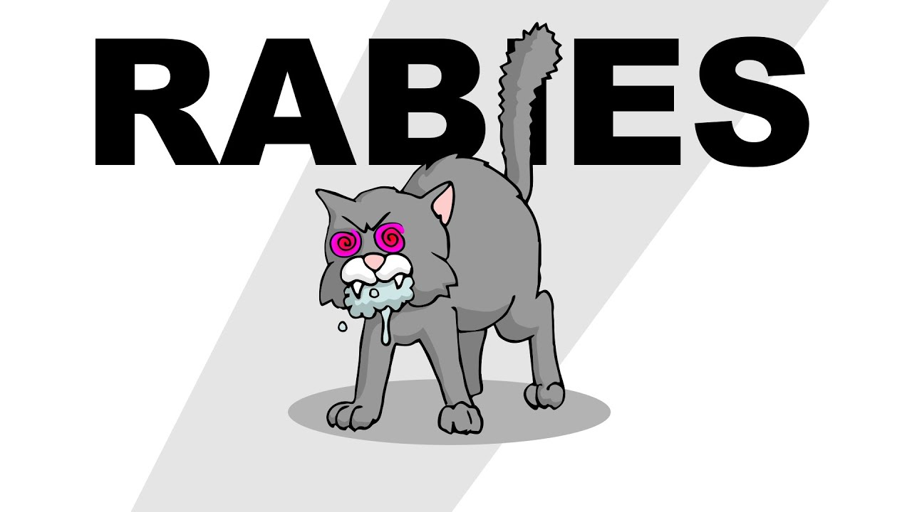
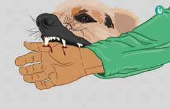

Rabies
What is rabies?
Rabies is a contagious and fatal disease that is passed from animal to human through bite. It is mostly transmitted from dogs and bats and mostly occurs at low income countries. Rabies is also caused by the rabies virus. There are some cures or treatments but it is either unavailable or too expensive in lower income countries. That is why it is more of a problem in those countries than higher income ones.
When was it discovered?
Rabies was first dscovered in Italy by a physician named Girolamo Fracastoro in the 16th century. The cure was finally found in 1885 by a French biologist named Louis Pasteur.
How is it transmitted?
Rabies is transmitted when an animal bites another animal or human and spreads the rabies virus through the bite by its saliva. In most to all cases it can spread when the infected saliva gets into an open wound in the body. The virus travels from the open wound and into the brain causing an inflammation. Rabies usually have a high miss rate of infecting a host because it travels through saliva. That doesn't mean it is not possible to transmit the virus. But once contracted it can become very fatal if not taken care of.
What is incubation period?
An incubation period is the time between when the first infection was contracted and the appearance of symptoms later on. Incubation period for rabies can vary typically from three to eight weeks. Even though it ranges from a short to long time in some cases, it is still important to be checked up and properly vaccinated by a doctor.
What are the early symptoms?
- Seizures (convulsions)
- Muscle spasms and unusual postures.
- Weakness or paralysis.
- Confusion, bizarre or strange thoughts, or hallucinations.
- Irritability or agressiveness.
- Excessive movements or agitation.

What are the later symptoms?
- Nausea.
- Anxiety.
- Confusion.
- Fever.
- Vomiting.
- Hyperactivity.
- Agitation.
- headache.